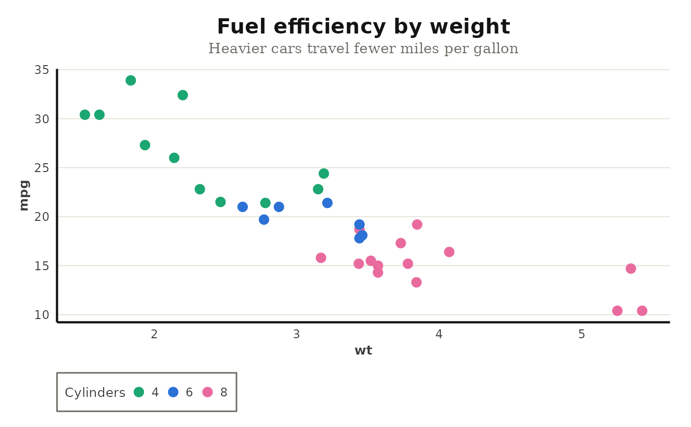

A clean, publication-ready theme modelled on the data visualizations in
Anthropic's model reports: a light background, light horizontal grid lines,
strong black axis lines, a bold geometric-sans title (Poppins), and a serif
subtitle (Lora). Custom fonts render on ragg/svglite devices; when the
bundled fonts are unavailable the theme falls back to generic families.
Usage
theme_claude(
base_size = 12,
font_title = "Poppins",
font_text = "Poppins",
font_subtitle = "Lora",
grid = c("y", "x", "xy", "none"),
axis_lines = TRUE,
background = "white",
...
)Arguments
- base_size
Base font size in points.
- font_title
Family for the plot title. Defaults to Poppins (with a
"sans"fallback).- font_text
Family for axis, legend, and other text. Defaults to Poppins (with a
"sans"fallback).- font_subtitle
Family for the subtitle and caption. Defaults to Lora (with a
"serif"fallback).- grid
Which major grid lines to draw:
"y"(default),"x","xy", or"none".- axis_lines
Logical; draw strong axis lines and ticks on the left and bottom? Defaults to
TRUE.- background
Panel and plot background fill. Use
"white"(default) or"cloud"for Anthropic's warm off-white, or any color string.- ...
Passed to
ggplot2::theme_minimal().
Details
The bundled Poppins and Lora fonts only render on ragg or svglite
devices. On the base PDF/PostScript device (used by R CMD check) custom
fonts are unavailable, so the examples below pass generic families. In your
own work, omit the font_* arguments to use the Anthropic typefaces and
save with a ragg device, e.g.
ggsave("plot.png", device = ragg::agg_png).
Examples
library(ggplot2)
# Generic fonts keep the example device-agnostic.
ggplot(mtcars, aes(wt, mpg, color = factor(cyl))) +
geom_point(size = 3) +
labs(
title = "Fuel efficiency by weight",
subtitle = "Heavier cars travel fewer miles per gallon",
color = "Cylinders"
) +
scale_color_claude_d() +
theme_claude(font_title = "sans", font_text = "sans", font_subtitle = "serif")

if (FALSE) { # \dontrun{
# With the bundled Anthropic fonts (requires systemfonts + a ragg device):
ggplot(mtcars, aes(wt, mpg, color = factor(cyl))) +
geom_point(size = 3) +
theme_claude()
} # }